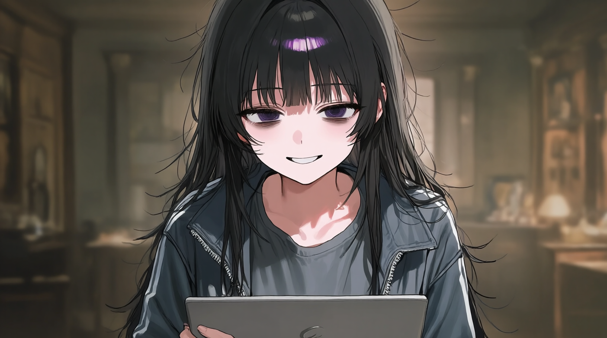
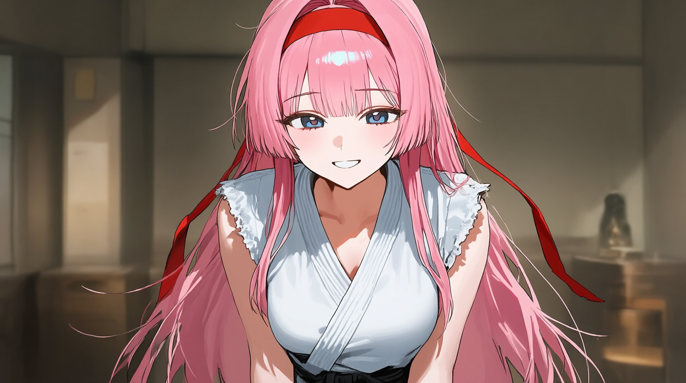
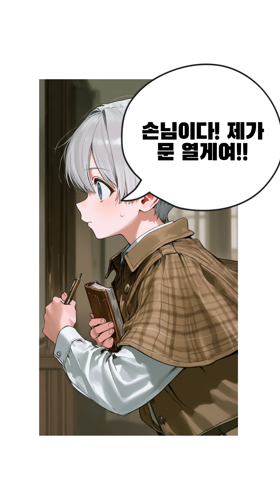
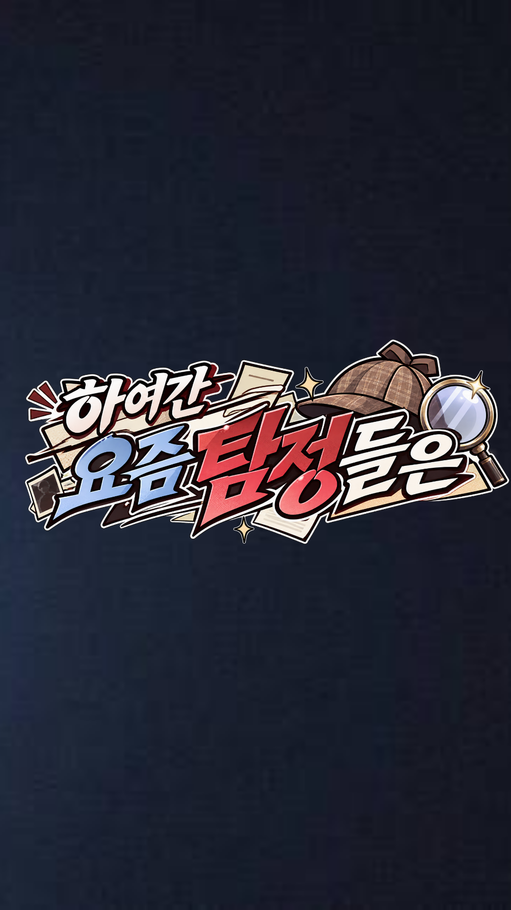

세계관 소개
날로 흉악해지는 서울의 범죄 속에서 공권력의 한계를 느낀 경찰은, 법의 테두리 밖에서 은밀하게 움직일 특수 탐정 조직을 기획한다.
그렇게 불명예 제대 후 야인으로 지내던 전직 비밀 요원 마창수와 그의 후배 백소연에게 탐정사무소 개설의 임무가 주어지고, 마침내 '남반 탐정사무소'가 문을 연다.
각 분야의 인재들을 모아 의욕적으로 수사를 시작했지만, 어째 모인 멤버들마다 하나같이 어딘가 단단히 나사가 빠져 있는데...
그렇게 불명예 제대 후 야인으로 지내던 전직 비밀 요원 마창수와 그의 후배 백소연에게 탐정사무소 개설의 임무가 주어지고, 마침내 '남반 탐정사무소'가 문을 연다.
각 분야의 인재들을 모아 의욕적으로 수사를 시작했지만, 어째 모인 멤버들마다 하나같이 어딘가 단단히 나사가 빠져 있는데...
캐릭터 소개
* 캐릭터 카드를 클릭하면 상세 정보를 볼 수 있습니다.

백소연

마창수

신은하

차유리

한예림

최민아
웹툰 보기





